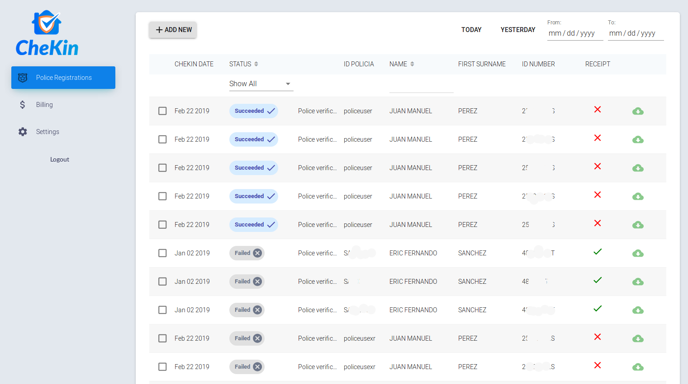

CheKin: REST APIs as a Service




Description
Responsibilities
- Requirements Analysis
- Architectre Design
- API Design
- DB Design
- Backend Development
- Unittesting and QA
- DevOps
- Project Management
- Mentoring
Project Brief
In this second stage, Chekin opened a new business branch in the B2B market by offering REST APIs as a service to other compannies in the turism bussines.
Key Features
- An API to extract guests data from a photo of the Passport or other IDs
- An API to compare the photo of the Passport with a Selfie to validate the identity.
- An API to send guests data to the authorities
- A Dashboard for monitoring and tracking the API usage
- Webhooks
My Role / Tasks
I leaded the development being in charge of the technical decissions and the project management, working on tasks such as.
- Requirements Specifications using BDD, making Flow charts, Sequence Diagrams among others
- Task management for a small team of 4 Engineers (two backend engineers, one mobile engineer and one frontend engineer) using Agile.
- Mentoring junior engineers
- Architecture Design and Documentation
- Extending the existing REST API and adding new ones for the B2B services
- Unit tests & Integration tests
- Code Reviews
- QA & Release Management
- Technical support for the customers while they were integrating the APIs